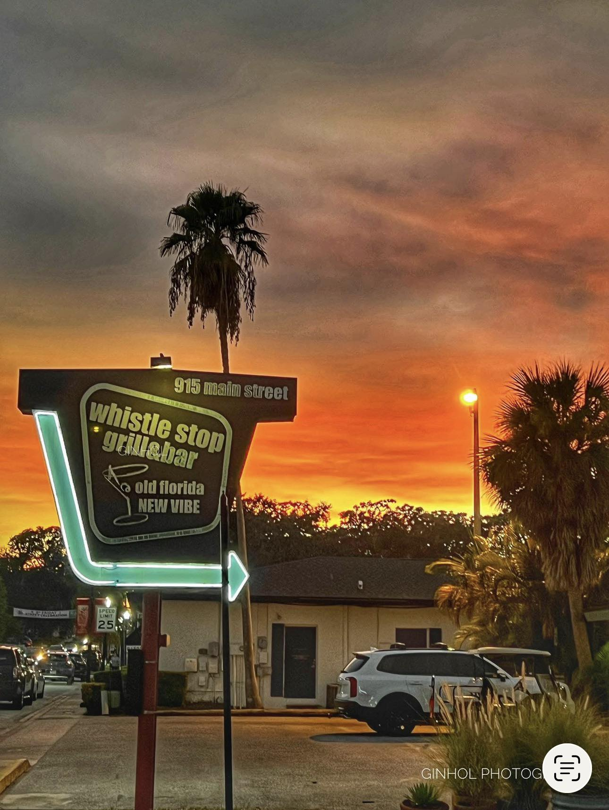
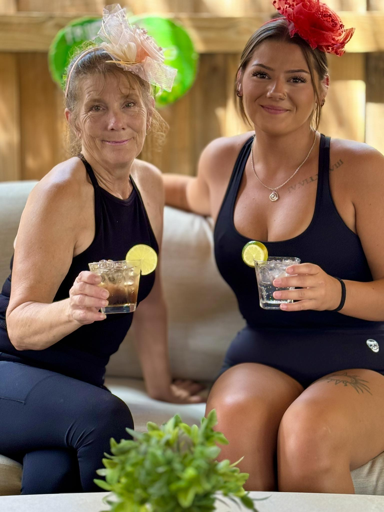

Since 1995
Our Story
Old Florida / New Vibe
From Frostee Harbor to Main Street
This location was home to Frostee Harbor — an ice cream stand and drive-in that was a Safety Harbor landmark for more than 35 years. Owners Dawn & Patrick Pendola transformed it into today's Whistle Stop Grill & Bar, carrying forward the neighborhood gathering-place spirit with a full kitchen, full bar, and open-air dining under the oaks on Main Street.
What makes us Whistle Stop
- 100+ seats — indoor and open-air patio
- 18 domestic & craft beers on tap
- Live local music multiple nights a week
- Dog-friendly patio — listed on BringFido
- Community events: cornhole, book club, ukulele jam
- A hometown staff that regulars know by name
General Manager: Raven Pendola · Safety Harbor Chamber member



